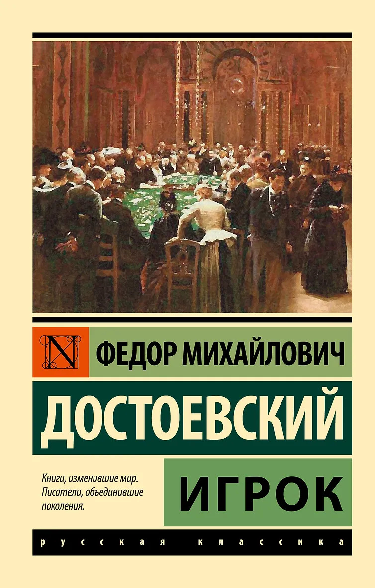
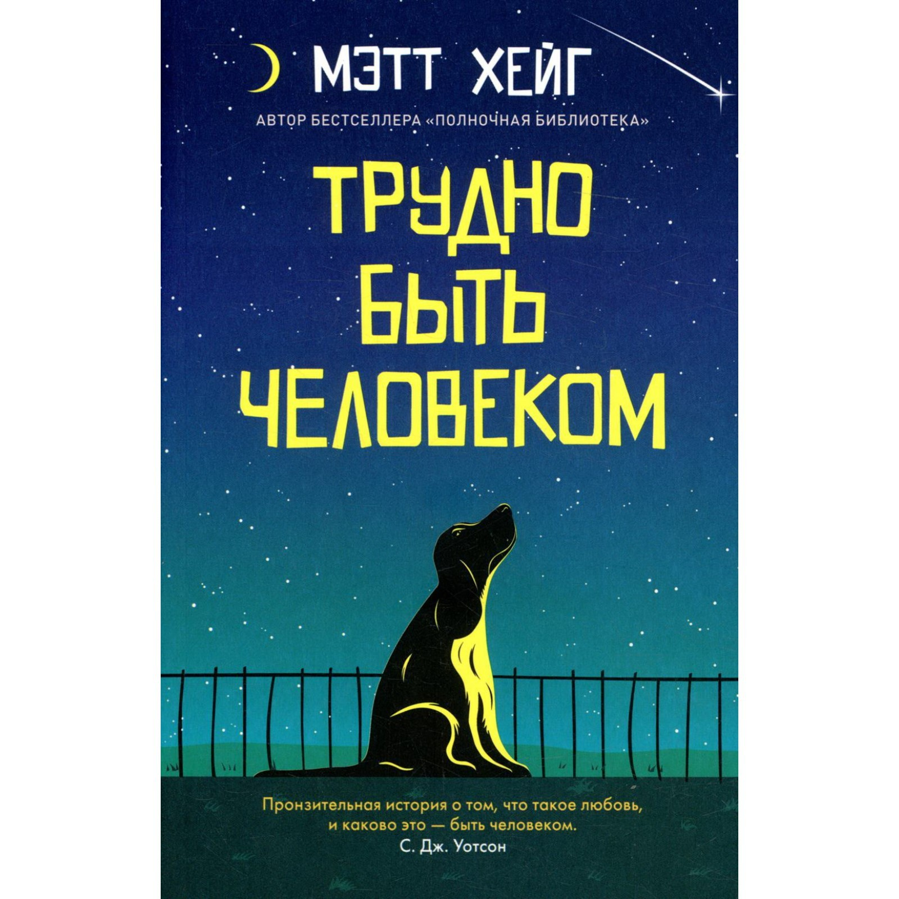
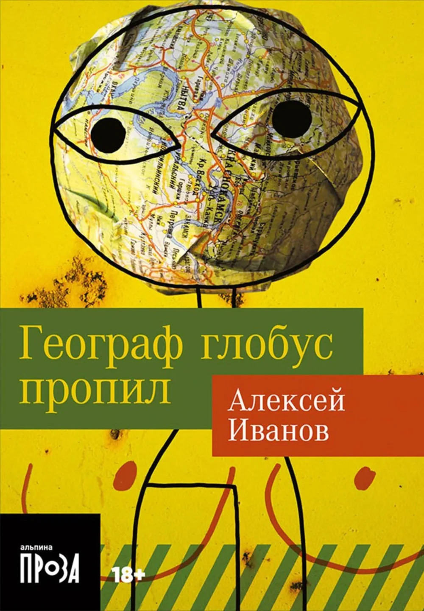
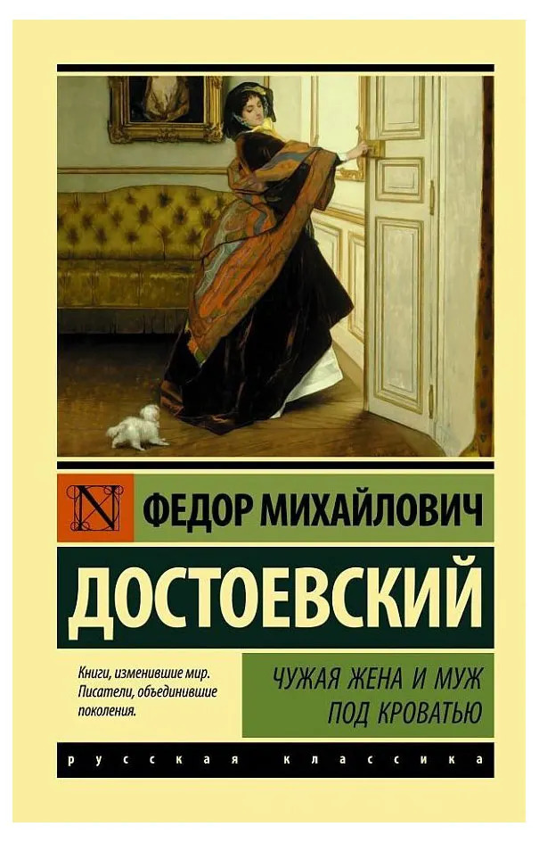
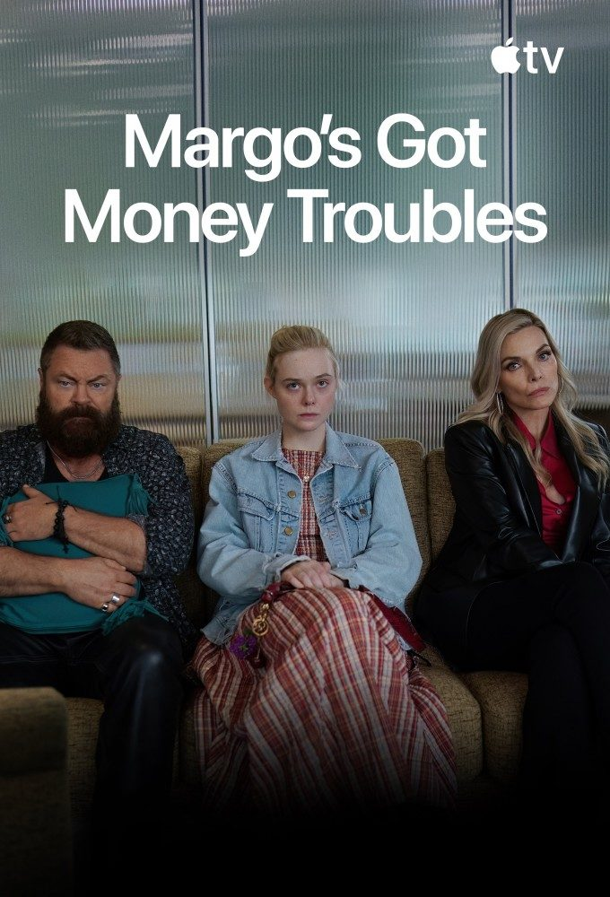
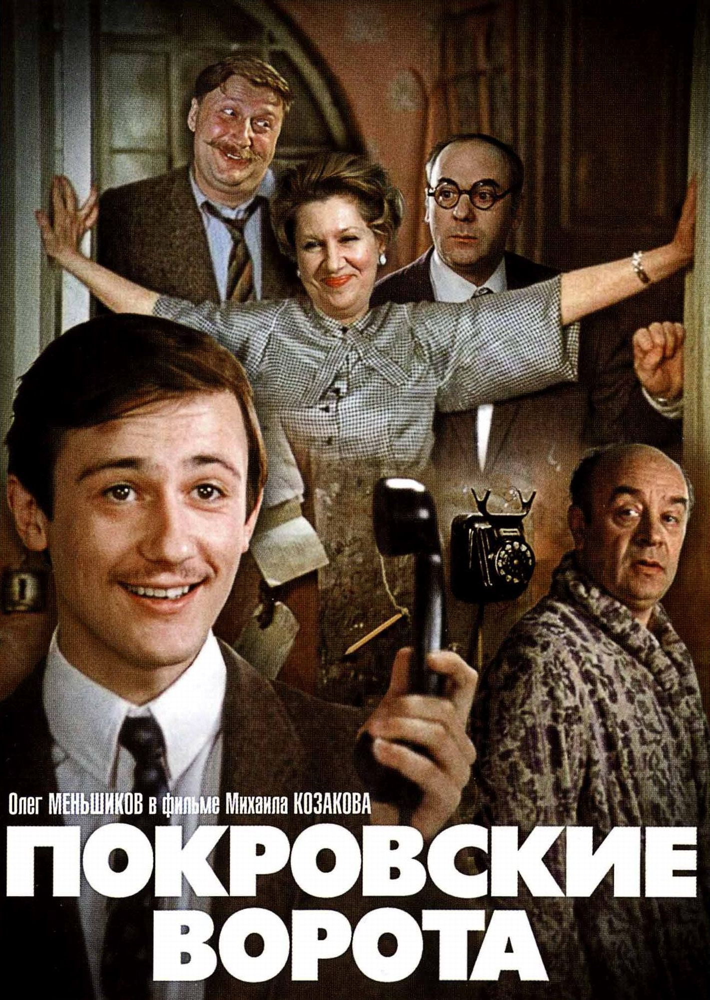

May

Немрачный Достоевский в своей естественной среде обитания

Легкая и забавня история про инопланетянина, пытающегося ужиться с людьми, и напоминающего как хрупка и очаровательна человеская жизнь

В аннотации написано, что это про моральные выборы и принципы. Не вы*бать 14-ти летнюю девушку - это очень принципиально видимо Если не учитывать "любовную" линию, то можно увидеть некторую очаровательность в Уральской жизни 00-ых

"Поймай свою жену, если сможешь". Пока одно из любимейших из кортокого жанра у Федора Михайловича!

Что если заставить человека влюбиться в себя, при этом меняясь под его стандарты? В советском фильме естественно все закончится хорошо)
Сумбурная Люси Лью подсаживает молодого козырька на адреналиновую иглу, а он только и рад...
Получилось поверхностно, но в качестве одноразового просомтра норм. Ностальгия может продать все, что угодно!

До последней серии я не ощущала подвоха, но последняя открыла на глаза на то, что это реклама по сути..... Очень обидно, потому что сериал мне понравился+актерский состав супер
Немного подушню, но если отзеркаливать мир, то думаю, он бы и был адаптирован под женщин)) А тут получилось, что в мир точно такой же, просто смена ролей, а можно было столько классных штук адаптировать под женский мир(архитектура, транспорт и тп)
Добрая версия Интерстеллара, очень понравилось!

Очень многие люди любят и советуют фильм, но я чего-то супер особенного не увидела( На похихикать(в рамках советской дозволенности) подойдет, но пересматривать бы не стала